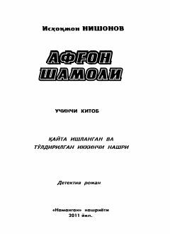

ASVatan himoyachilarining Afg'onistondagi murakkab va xavfli kurashlari haqidagi detektiv roman.
Ushbu asar Isxoqjon Nishonovning ko'p jildli roman-serialining uchinchi kitobi bo'lib, unda Vatan tinchligi yo'lida xizmat qilayotgan o'g'lonlarning fitnachi kimsalarga qarshi kurashi tasvirlanadi. Asar voqealari Afg'oniston hududidagi murakkab vaziyatlar va yashirin xazina atrofidagi sarguzashtlar bilan bog'liq.